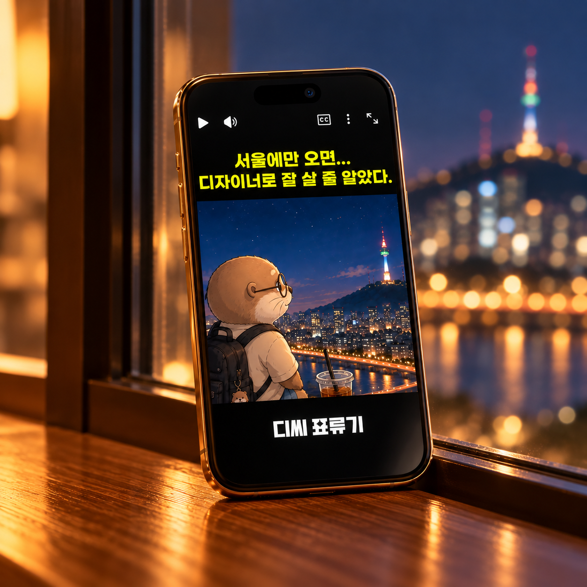

표류에서 시작된 캐릭터
서울의 한강을 배경으로, 표류하듯 살아가는 디자이너의 모습을 수달 캐릭터로 형상화했습니다.

STORY LINE
서울의 한강을 배경으로, 표류하듯 살아가는 디자이너의 모습을 수달 캐릭터로 형상화했습니다.
디자이너의 ‘디’를 성으로 활용해 캐릭터 DC를 만들고, 서울에서 고군분투하는 일상을 ‘디씨 표류기’라는 이야기로 풀어냈습니다.
스토리와 캐릭터를 직접 기획하고, AI 기반 이미지·모션 영상화와 CapCut 편집을 통해 숏폼 콘텐츠로 완성했습니다.